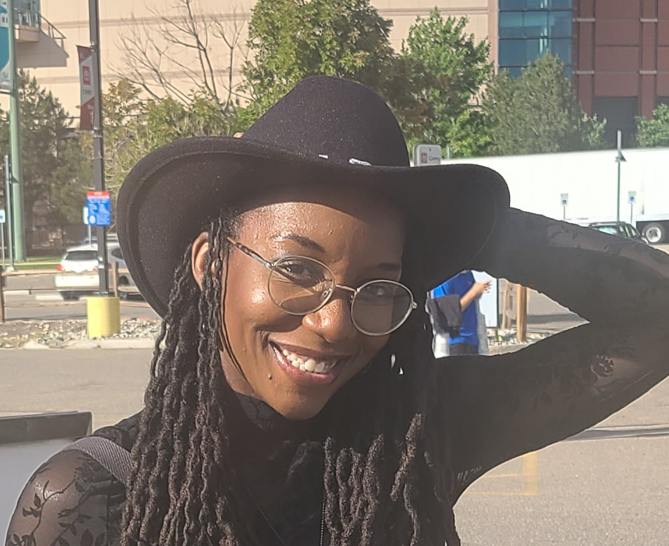

Get to Know Me.
Welcome In! My name is Kelly, and I'm based in Colorado. I'm a curious and creative individual who enjoys learning new things, exploring fresh ideas, and staying connected with the world around me. With a passion for creativity and visual storytelling, I specialize in graphic design that captivates and communicates. I enjoy crafting designs that blend innovation with functionality, ensuring each project not only looks stunning but also effectively delivers its message. Whether it's branding, digital media, or print, I thrive on bringing ideas to life through design. My journey as a graphic designer is fueled by curiosity, a commitment to excellence, and a drive to make a lasting impact through visual artistry. I believe that great design begins with understanding—understanding the needs of the audience, the goals of the project, and the story behind the vision. By blending creativity with strategy, I aim to create designs that not only capture attention but also leave a meaningful impression. To me, graphic design is more than visuals; it's a bridge that connects ideas to people.